- サブグループ内標準偏差 ()
- サブグループサイズ（1より大きい場合、または1に等しい場合）によって推定方法が異なります。
- サブグループサイズ > 1 の場合
- サブグループ範囲の平均 (Rbar)
-
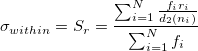
、ここで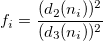
-
 : サブグループの数
: サブグループの数 -
 : 第
: 第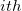
サブグループの範囲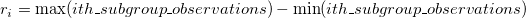
-
 : 第サブグループの観測数
: 第サブグループの観測数 -
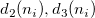
: 無偏定数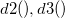
-
- サブグループ標準偏差の平均 (Sbar)
- 無偏推定
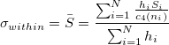
、ここで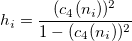
- 無偏定数を使用しない場合：
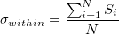
- : サブグループの数
-
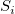
: 第サブグループの標準偏差 - : 第サブグループの観測数
-
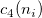
: 無偏定数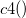
- 無偏推定
- プールされた標準偏差
- 無偏推定
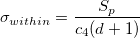
, ここで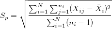
,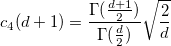
- 無偏定数を使用しない場合、
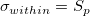
- : サブグループの数
- : 第サブグループの観測数
-
 : 第サブグループの第
: 第サブグループの第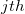
観測値 -
 : 第サブグループの平均値
: 第サブグループの平均値 -
 :
: 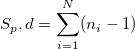
の自由度 -
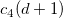
: 無偏定数 -
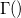
: ガンマ関数
- 無偏推定
- サブグループ範囲の平均 (Rbar)
- サブグループサイズ = 1の場合
- 移動範囲の平均
-
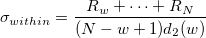
- : すべての観測値の数
-
 : 移動範囲に使用する観測数
: 移動範囲に使用する観測数 -
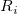
: 第移動範囲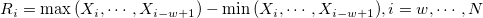
、および は第観測値
は第観測値 -
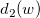
: 無偏定数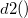
-
- 移動範囲の中央値
-
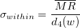
- : すべての観測値の数
- : 移動範囲に使用する観測数
-
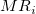
: 第移動範囲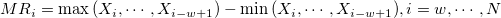
、およびは第観測値 - :
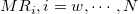
の中央値 -
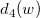
: 無偏定数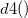
-
- 二乗連続差分（MSSD）の平方根
- 無偏推定
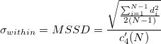
- 無偏定数を使用しない場合、
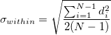
- : 観測値の数
-
 : 観測値間の連続差分
: 観測値間の連続差分 -
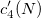
: 無偏定数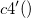
- 無偏推定
- 移動範囲の平均
- サブグループサイズ > 1 の場合
- サブグループサイズ（1より大きい場合、または1に等しい場合）によって推定方法が異なります。
 )
)
 : 第観測値
: 第観測値 : 信頼水準に対応する有意水準
: 信頼水準に対応する有意水準 : 自由度
: 自由度 はサブグループの数、は移動範囲のスパンの長さ、
はサブグループの数、は移動範囲のスパンの長さ、 はサブグループサイズの平均（）、は
はサブグループサイズの平均（）、は パーセンタイル値
パーセンタイル値}}{\frac{Toler}{2}*\sigma_{within}} &Both\;USL\;and\;LSL\;Valid\end{array}\right.")
 : 自由度の
: 自由度の![Cpm = \left\{\begin{array}{ll}\frac{USL-LSL}{Toler*\sqrt{\frac{\sum_{i=1}^K\sum_{j=1}^{n_i}(X_{ij}-Target)^2}{\sum_{i=1}^Kn_i}}}&USL,LSL\;Valid\;and\;Target=m\cr\frac{\min(Target-LSL, USL-Target)}{\frac{Toler}{2}*\sqrt{\frac{\sum_{i=1}^K\sum_{j=1}^{n_i}(X_{ij}-Target)^2}{\sum_{i=1}^Kn_i}}}&USL,LSL\;Valid\;and\;Target\neq m\cr\frac{USL-Target}{\frac{Toler}{2}*\sqrt{\frac{\sum_{i=1}^K\sum_{j=1}^{n_i}(X_{ij}-Target)^2}{\sum_{i=1}^Kn_i}}}&Only\;USL\;and\;Target\;Valid\cr\frac{Target-LSL}{\frac{Toler}{2}*\sqrt{\frac{\sum_{i=1}^K\sum_{j=1}^{n_i}(X_{ij}-Target)^2}{\sum_{i=1}^Kn_i}}}&Only\;LSL\;and\;Target\;Valid\cr NANUM &Otherwise\end{array}\right.](../images/Algorithm_CA/math-192537281b6161ec02856cd3914aa87f.png "Cpm = \left\{\begin{array}{ll}\frac{USL-LSL}{Toler*\sqrt{\frac{\sum_{i=1}^K\sum_{j=1}^{n_i}(X_{ij}-Target)^2}{\sum_{i=1}^Kn_i}}}&USL,LSL\;Valid\;and\;Target=m\cr\frac{\min(Target-LSL, USL-Target)}{\frac{Toler}{2}*\sqrt{\frac{\sum_{i=1}^K\sum_{j=1}^{n_i}(X_{ij}-Target)^2}{\sum_{i=1}^Kn_i}}}&USL,LSL\;Valid\;and\;Target\neq m\cr\frac{USL-Target}{\frac{Toler}{2}*\sqrt{\frac{\sum_{i=1}^K\sum_{j=1}^{n_i}(X_{ij}-Target)^2}{\sum_{i=1}^Kn_i}}}&Only\;USL\;and\;Target\;Valid\cr\frac{Target-LSL}{\frac{Toler}{2}*\sqrt{\frac{\sum_{i=1}^K\sum_{j=1}^{n_i}(X_{ij}-Target)^2}{\sum_{i=1}^Kn_i}}}&Only\;LSL\;and\;Target\;Valid\cr NANUM &Otherwise\end{array}\right.")
 :との中点
:との中点 : サブグループの数
: サブグループの数 : 規格限界外の累積確率
: 規格限界外の累積確率 に変更して、のを計算します。
に変更して、のを計算します。 : 方程式の根:
: 方程式の根: ^{th}") パーセンタイル
パーセンタイル とLの計算については、
とLの計算については、 )
)
 サブグループのサイズ
サブグループのサイズ 観測値
観測値 :逆F累積分布関数
:逆F累積分布関数 :逆カイ二乗累積分布関数
:逆カイ二乗累積分布関数